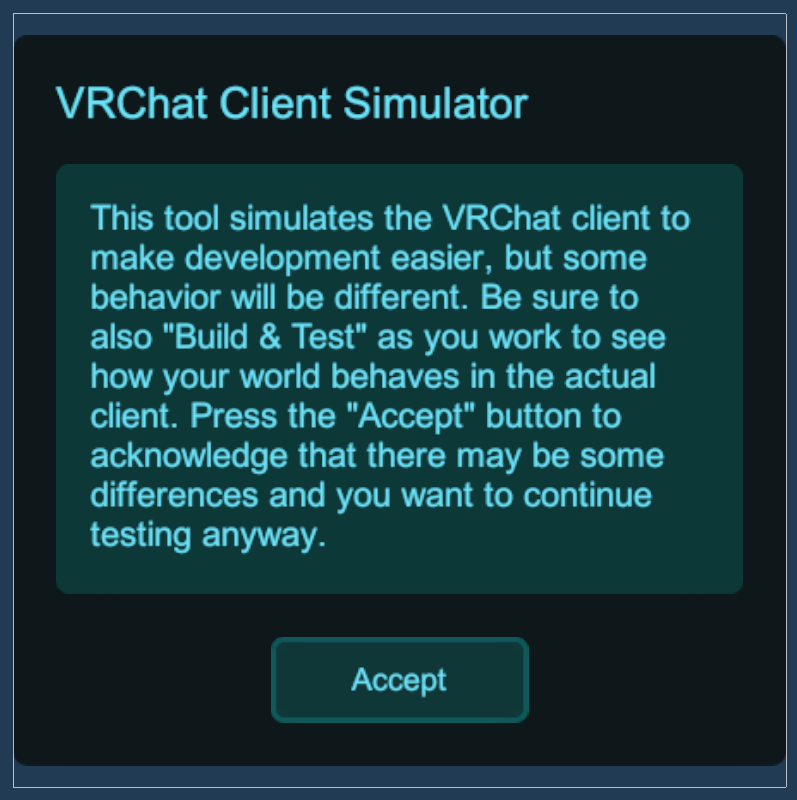
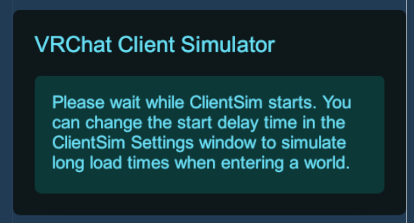

Client Sim Menu
The ClientSimMenu has four pages that can be displayed depending on the situation. The menu is now positioned in world space instead of being an overlay to the camera. It will render on top of everything to ensure players can use the menu.
Warning Page

The Warning page will be displayed every time ClientSim starts. This page informs the user that ClientSim is not the same as VRChat, and there will be differences. It only has one button, which the user must press to dismiss the page and close the menu.
Pause Page

The Pause page is displayed whenever the user opens the menu after accepting the Warning page. This page has three sections: Actions, Player Info, and Settings.
Actions
The actions section contains four buttons:
- Close Menu - Close the menu and allow player movement
- Respawn - Close the menu and teleport the player to the spawn point
- Settings Window - Open the ClientSim Settings Window
- Exit Playmode - Exit Play mode and go back to Edit mode.
Player Info
The Player Info section contains info regarding the local player.
- Player Name
- Player ID
- Is the local player the master
- Is the local player the instance owner
- A button to spawn remote players for testing
Settings
The Settings section provides options to change the current ClientSim Runtime Settings. Changing these will save the values even after Playmode ends.
- Show Tooltips - Toggle the display of interaction tooltips.
- Desktop Reticle - Toggle the desktop reticle in the center of the screen. This does not disable the UI pointer if hovering over a UI interactive object.
- Invert Mouse Look - Toggle whether the mouse Y should be inverted.
- Console Logging - Toggle whether debug information should be logged to the console.
- Player Height - A slider to set the player’s height. Default value is 1.9 Unity units tall. The slider is limited between 0.2 and 4 units. If the value in the ClientSim Unity Settings Window is set, then the height can be overridden up to 80 units. Toggling the menu will clamp the max value to keep the slider usable without exiting playmode. Note that PlayerHeight is different from TrackingScale, although the values are related.
Delay Start Page

The Delay Start page is displayed whenever the ClientSim Settings has a non zero value for how long ClientSim should be delayed before starting. This page will dismiss automatically when ClientSim starts. If the player controller was spawned, the Warning page will then be displayed. The user cannot close out of this page and must wait the duration or exit playmode.
Invalid Settings Page

The Invalid Settings page is displayed when the user has Unity Project Settings that are not set up to use ClientSim. This can happen when ClientSim has just imported, or if the user modifies a setting that ClientSim relies on. When this is displayed, the Settings Window is forced to be displayed so that users can click the buttons needed to modify project settings. In the case the player does not have the correct Unity Input settings, the buttons on the menu will do nothing. There is no way to get past this page except to exit playmode and correct the invalid settings.